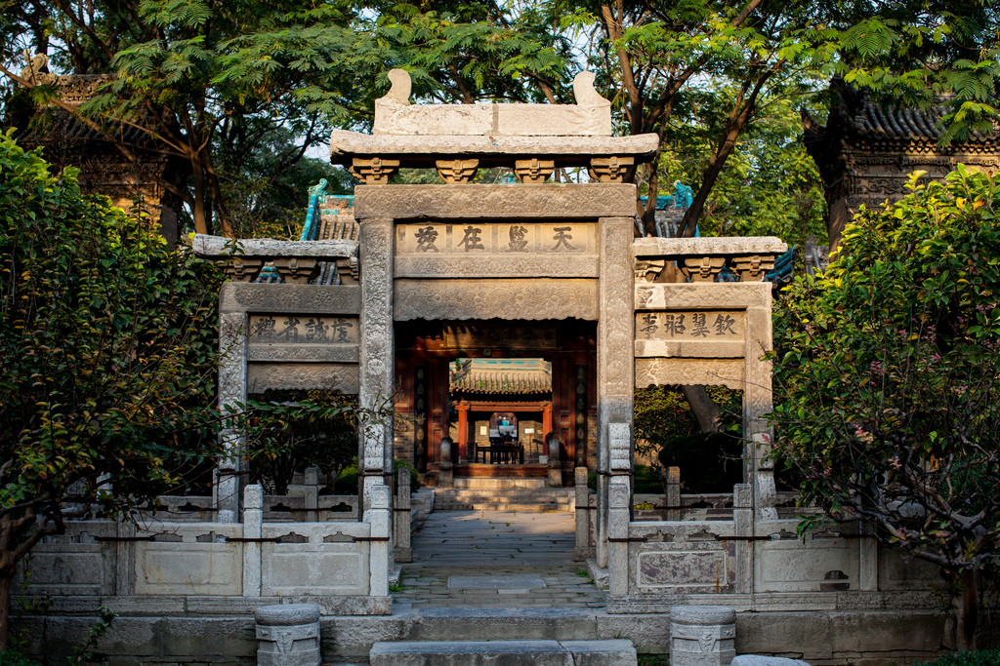
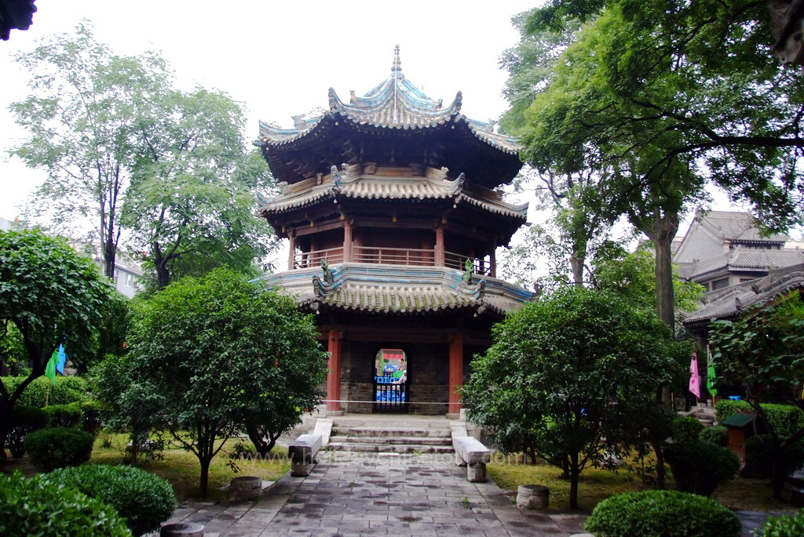

La grande mosquée de Xi'an
Dans la ville de Xi’an (西安) située dans en Chine centrale se trouve la plus grande mosquée du pays. La grande mosquée de Xi’an(西安大清真寺) ou par son autre nom, Mosquée de Huajue (化觉巷清真寺), constitue un lieu de culte musulman populaire et pour les touristes et pour la population musulmane pratiquante chinoise. L’islam a été introduit en Chine environ en 616 avant J-C par des compagnons de Maomet. Depuis elle s’est propagée dans le reste de la Chine mais reste tout de même une religion minoritaire avec seulement environ 1-3% de la population se disant pratiquant. Le reste de la population est divisée entre plusieurs autre religions et croyances. De loin les pratiquants de religions traditionnelles chinoises forment la majorité avec environ 70% de la population. Les bouddhistes les suivent avec environ 14% de la population. La population musulmane chinoise est principalement concentrée dans l’Ouest du pays et on peut noter un déclin fort déclin plus on se dirige vers l’Est. La province de Xinjiang (新疆) contient donc la plus grande concentration de musulmans avec de 50% à 60%.
Les premiers travaux ont été exécutés en 742 durant la dynastie des Tang sous le règne de l’empereur Xuanzong. Cependant, sa construction est principalement attribuée au règne de Hongwu durant la dynastie Ming mais de nouvelles additions y furent apportée durant la dynastie Qing. En 1956, la mosquée fut déclarée site historique et protégé au niveau de la province de Shaanxi et fut plus tard déclaré protégé au niveau national en 1988. La mosquée est aujourd’hui une attraction touristique de renom et est utilisé par les Huis (musulmans chinois) comme d’un lieu de culte.
L’espace occupé par l’édifice est 48m par 248m et les murs renferment une aire d’environ 12,000 pieds carrés. La mosquée comporte cinq cours extérieures et chacune d’elles comporte un monument ou une pièce centrale. Dans la quatrième par exemple, on peut retrouver la salle de prière ainsi qu’un gazébo hexagonal. À l’intérieur de la mosquée, plusieurs murs sont recouverts de textes et en chinois et en arabe. L’édifice combine le style d’architecture traditionnel chinois et celui arabe, la mosquée est donc orientée vers la Mecque. La salle de prière à elle-même à une aire d’environ 1,270 mètres carrés et est couverte d’un seul plafond. Celle-ci est malheureusement fermée aux non-musulmans. Le troisième pavillion renferme la tour la plus haute du complexe. Avec ses plus de 40 mètres de haut, elle est conçue entièrement sous le style traditionnel chinois. À l’extérieur, on peut voir des tuiles bleues ainsi que des têtes de dragons. De l’intérieur, on peut remarquer que le plafond est recouvert de fleurs de lotus peintes. Chaque matin, à 8 heures, la cloche située à l’intérieur de la tour sonne et réveille toute la citée environnante.
Comme toute autre mosquée, celle de Xi’an est principalement un lieu de recueillement et de prière. Il est nécessaire d’enlever ses chaussures ainsi que de se nettoyer les pieds, mains et les bras avant de pénétrer la salle de prière. Il n’est pas absolument nécessaire de se déchausser par contre, puisque les tapis de prière sur lesquels on marche sont les mêmes que ceux sur lesquels on se prosterne et donc que le front touche, il est fortement recommandé de le faire.
Retour à la carteWikipedia – La grande mosquée de Xi’an (Consulté le 7 Mai 2018) https://en.wikipedia.org/wiki/Great_Mosque_of_Xi%27an
Wikipedia - 西安大清真寺 (Consulté le 8 Mai 2018) https://zh.wikipedia.org/wiki/西安大清真寺
Wikipedia – Islam en chine (Consulté le 7 Mai 2018 https://en.wikipedia.org/wiki/Islam_in_China
Wikipedia – Religions in China (Consulté le 8 Mai 2018) https://en.wikipedia.org/wiki/Religion_in_China
西安化觉巷清真大寺 (Consulté le 8 Mai 2018) https://baike.baidu.com/item/西安化觉巷清真大寺/7935859?fromtitle=西安大清真寺&fromid=2998803
Retour à la carte